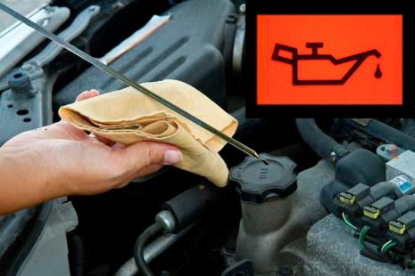
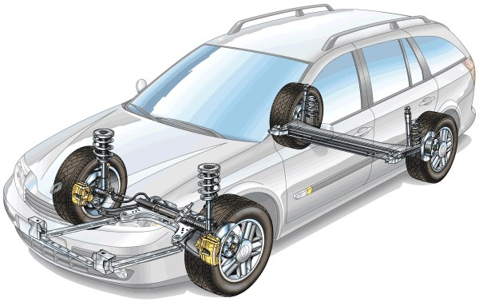

The most widely used engines are:
Idle: Its function is to prevent the engine from stalling when not in gear. A high idle increases fuel consumption.
Air filter: Dirt in the filter increases fuel consumption (check more often in summer).
Accelerator: Determines the amount of fuel, the more you accelerate the greater the consumption.
Lighting: Adjust the headlights, if poorly adjusted:
Ignition: Spark plugs.
Charging circuit: Provides energy and recharges the battery.
When the engine is running, the energy that is spent is from the alternator and when the vehicle is stationary, it is consumed directly from the battery.
A battery does not generate power, it only collects it. For maintenance:
Check the oil level cold in a horizontal position using the dip stick.
Change the oil hot, new oil is added through the fill hole when indicated by the manufacturer.
Check the oil indicator on the dashboard. If lit, this indicates a lack of oil.

Water is cooled in the radiator by a fan. Periodically you need to check the liquid level. When adding new coolant water, you will have to take into account the degree of freezing of the liquid.
Allows the driver to direct the movement of the vehicle to follow the desired path.
At low speed, the progressive power steering minimizes the effort required to move the steering wheel.
Responsible for maintaining the stability of the vehicle.
If the suspension is in poor condition, the rear of the vehicle will rise excessively when braking. It can also cause an oscillation of lights which can blind other drivers.

Automobiles are moved by the force of an engine, which is transmitted to the drive wheels.
The gearbox, whose function is to select the right gear at all times. If you notice that it’s difficult to change gears, it is most likely because of a lack of oil.
The clutch allows the movement of the engine to reach the wheels, if on accelerating the movement does not reach the wheels, it is because it is engaged.
Vehicles may be:
Check the steering wheel when it becomes too stiff or too loose.
Keeping your vehicle well-maintained, especially tyres, and passing technical inspections (ITV), when necessary, prevents many accidents.
Required spare parts for passenger cars are:
Fumes: